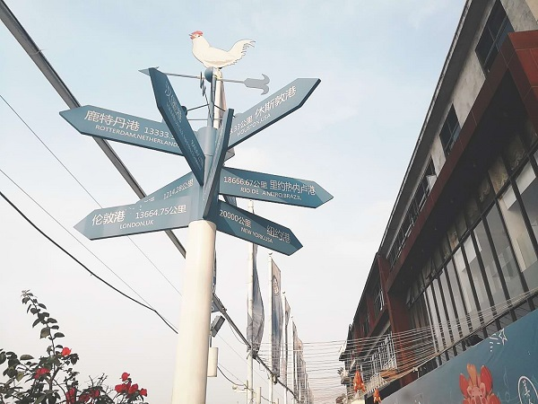
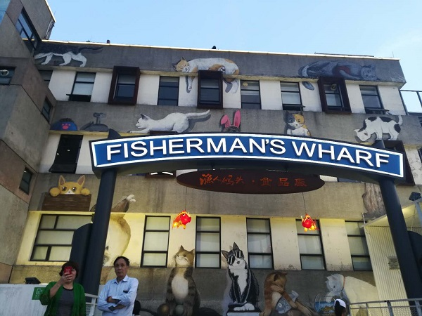

顺德容桂渔人码头
在顺德容桂德胜河畔，
曾经繁荣的容桂食品出口公司的码头（简称食出码头）就在这里。
当年那幅人声鼎沸、来往船只络绎不绝的图景也承载着许多容桂人的回忆。
如今，食出码头已改造成渔人码头，
成为容桂街道乃至顺德区的许多年轻人的休闲旅游“新地标”、“网红打卡胜地”。
渔人码头是集亲水、休闲、娱乐为一体的潮人集散区，码头上有一座蓝白色灯塔,是拍照留念的热门地点，改造后的码头仍保留着船锚、缆绳等旧时印记，以滨江自然风光为背景，营造出充满现代风情的主题广场，标志性建筑和亲水的场景设计，给游客不一样的吸引力。


联系我们
地址：广东省佛山市顺德区容桂街道东堤路16号
联系方式：(0757)28370106
邮箱地址：2467266251@qq.com